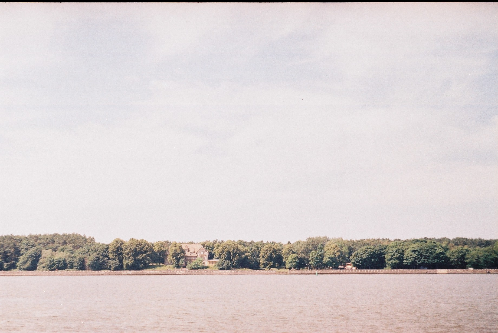
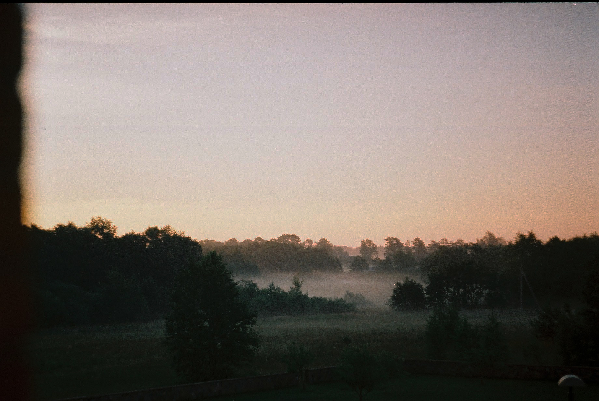
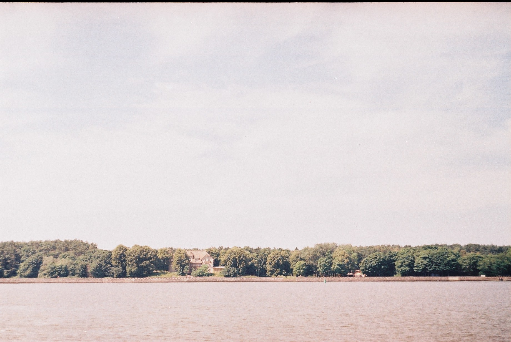
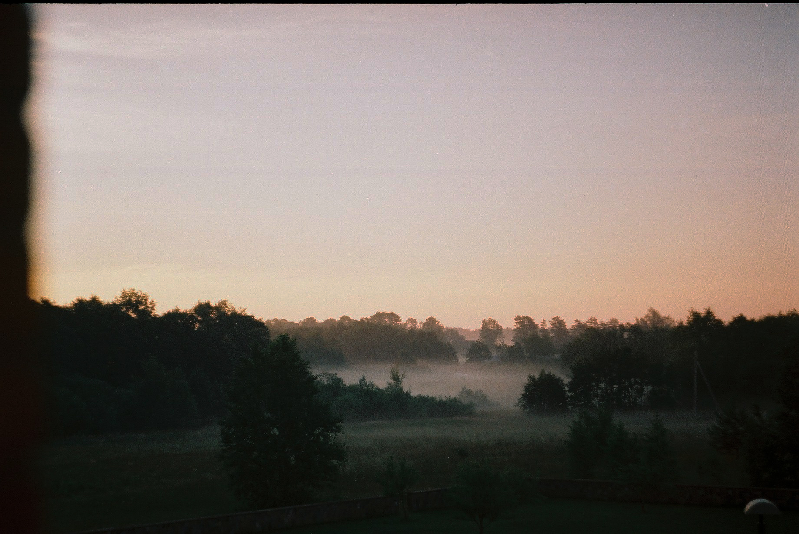

Hello, I'm Faustas Jonas
I have 4 years’ experience as Interior designer and I am a beginner to Front-End development.
I value clarity, empathy, and integrity above all else. These ideals guide my approach to problem solving and life in general.
Story
Born in Panevėžys, Lithuania, in 1993, I have always sought my place in the world. My life has taken various paths that have shaped my perspective and enriched my understanding of the world. Throughout my journey, I have accumulated valuable experiences and knowledge that I now put into practice. As a highly motivated, passionate, and dedicated graduate student with a diverse cultural and multidisciplinary background, I possess excellent communication and English language skills, as well as a strong ability to work in teams and solve problems. Living in both Italy, Denmark, and Portugal, for several months has exposed me to different cultures and broadened my horizons. My ultimate dream and ambition are to move to Canada and immerse myself in its stimulating and innovative environment.
Softwares
- AutoCAD
- SketchUp+V-ray
- Blender
- Photoshop
- Illiustrator
- InDesign
- CSS
- JavaScript
Interiors
Interiors created while I was working in Samanose - interjero dizainas studio. All rights belongs to the studio.

Photography
Photography is one of my favorite hobbies, although I don't have as much time for it anymore. Capturing moments with a film camera is a joy I cherish - it teaches patience, consideration, and focus, all while creating a tangible, timeless art.
 


